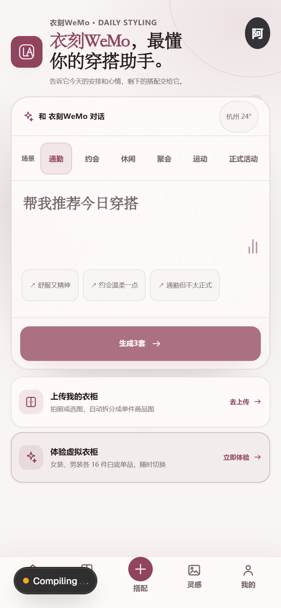
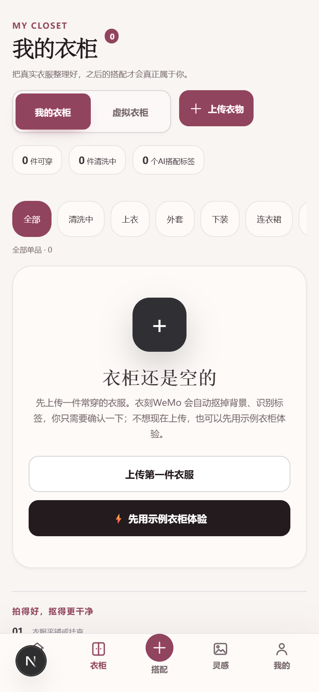

AI 穿搭助手 / 从 0 到 1
衣刻 WeMo
从真实衣柜出发，
让每一次穿搭都能落地。
将衣物识别、天气与场景约束、穿搭推荐和虚拟试穿，连接成可验证的产品闭环。
在线体验 ↗https://s7nflqv16lurrohpcvegk.apigateway-cn-beijing.volceapi.com/WeMo / Your wardrobe, understood.
你的衣柜。
新的可能。

